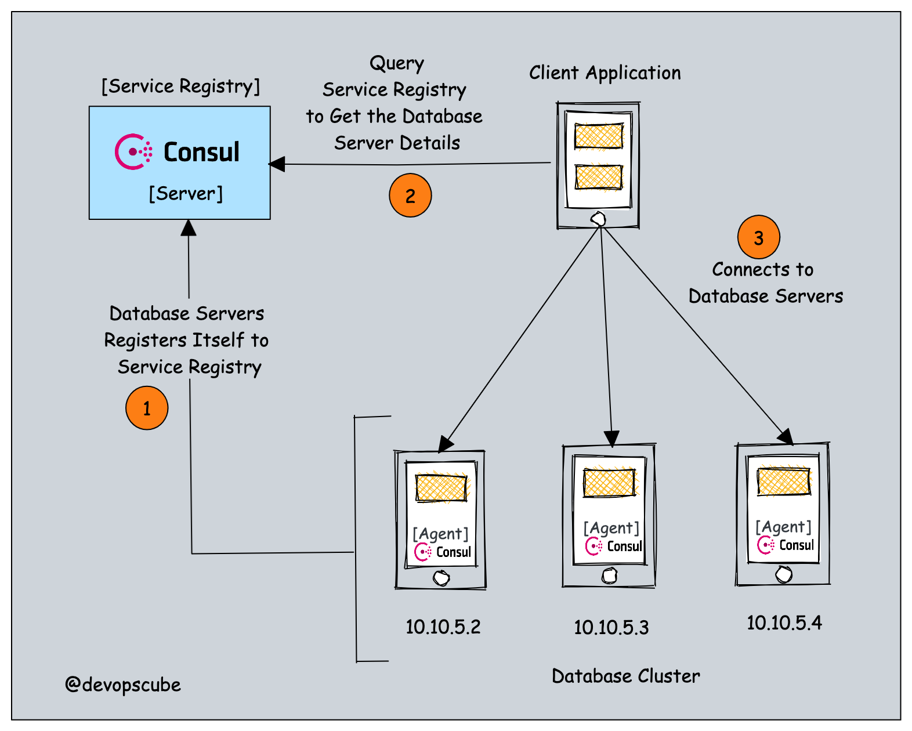
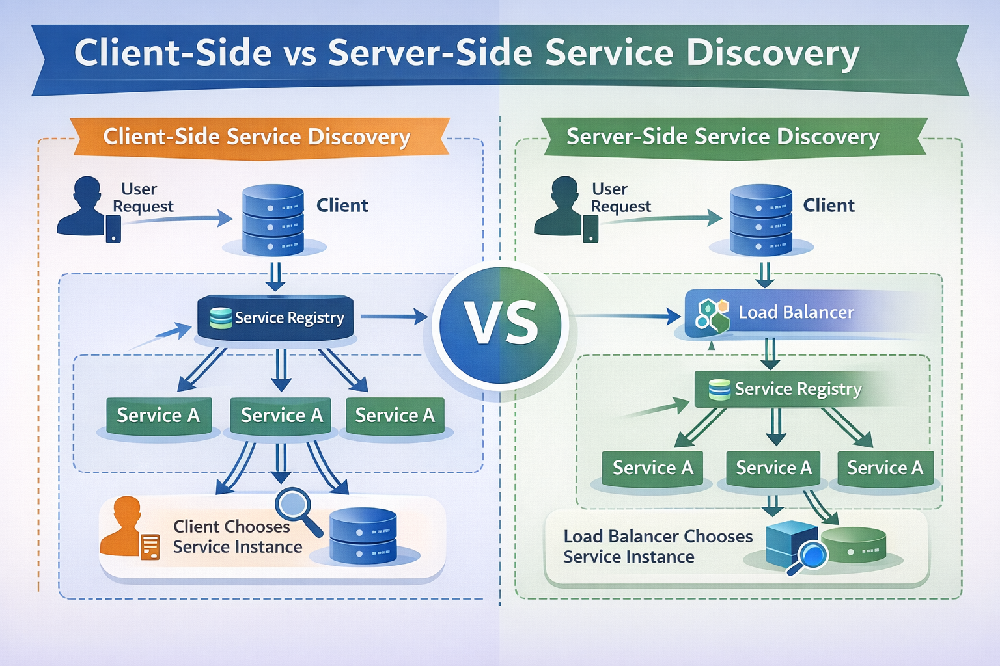
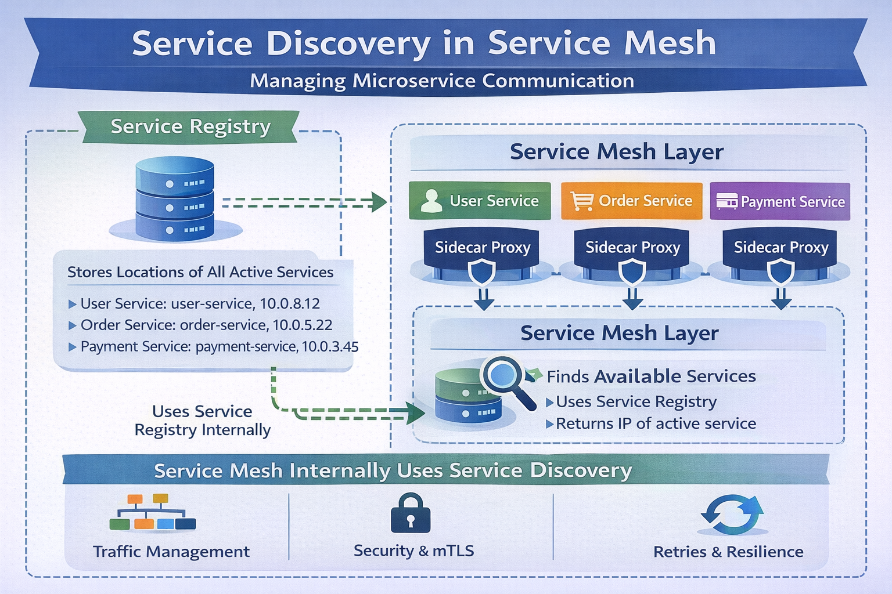

System Design Mastery
Master scalable systems with premium insights
🔎 SERVICE DISCOVERY - Dynamic Detection of Service Locations
1️⃣ What is it?
Service Discovery is a mechanism that allows services in a distributed system to automatically find and communicate with other services without hardcoding their IP addresses.
Services will register themselves in a Service Registry, and other services query the service registry to find them.
Simply:
Service Discovery helps services find the location (IP/port) of other services.

2️⃣ Why does it exist? (What problem does it solve?)
In microservices, services
run on many servers/containers and their IP addresses can change frequently.
So instead of
hardcoding addresses, services discover each other automatically.
Imagine a microservices system:
- User Service
- Order Service
- Payment Service
If Order Service needs to call Payment Service, how does it know IP address, port, and which instance to call?
Because containers may restart and IPs change, service discovery solves this.
Service discovery solves:
- Dynamic service location
- Auto-scaling support
- Reliable communication between services
3️⃣ What breaks without it?
Without service discovery:
- Services must hardcode IP addresses
- Scaling becomes difficult
- Services cannot locate each other
5️⃣ Types of Service Discovery
🔹 Client-Side Discovery
Client asks registry for service location and calls it directly.
Example flow:
Client → Service Registry → Get Service Address → Call Service
Example tools: Netflix Eureka

🔹 Server-Side Discovery
Client sends request to a load balancer, which queries the registry and routes traffic.
Example flow:
Client → Load Balancer → Service Instance
Used in: Kubernetes, AWS Elastic Load Balancer
6️⃣ Real app connection
Example microservices system:
User Service
Order Service
Payment Service
Suppose Payment Service has 3 instances:
Order Service does not know
which one to call.
Instead it asks Service Registry : "Where is Payment Service?"
Registry
returns available instances
Then Order Service connects to one.
Flow:
Order Service → Service Registry → Get Payment Service → Call it
Service Discovery vs Service Mesh
Service Mesh : Manages how services communicate with each other.
How They Work Together
Service Mesh uses Service Discovery internally to find service instances and manage communication between them.
Example flow:
Service A → Service Mesh Proxy → Service Registry → Service B
Steps:
- Service A sends request
- Proxy asks service discovery
- Gets service instance
- Applies policies (retry, security, etc.)
- Sends request

Real Example (Kubernetes)
Service Discovery → Kubernetes DNS
Service Mesh → Istio
DNS finds service.
Istio manages communication.
🧠 Summary
Service discovery allows
services in distributed systems to each other dynamically using a service
registry instead
of hardcoded network addresses.
It supports scalable and resilient microservice communication as
service instances change frequently.
💡 Pro Tip
Use a registry/DNS-based discovery system so services never depend on fixed IPs. Combine it with load balancing and health checks to avoid routing to unhealthy instances.
Tools of service discovery:
- Eureka (in Netflix microservices)
- Consul (in HashiCorp systems)
- Zookeeper (in distributed systems)
- Kubernetes DNS (used in container systems)